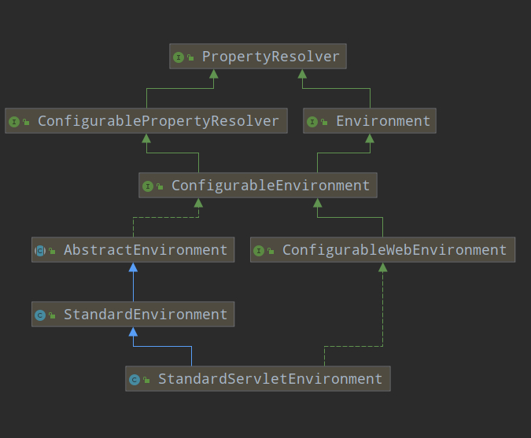
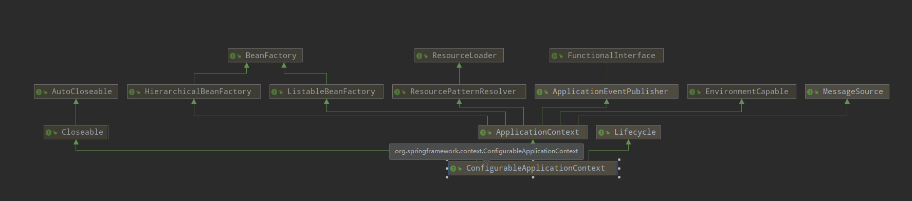

这是一篇一年多前写的博客，使用的源码版本是1.5.x。当时发布在CSDN，现在同步到其他平台，虽然SpringBoot这个版本帝刷的很快，但是2.x版本的启动流程并没有怎么变化，一样可供参考。
第一部分:SpringApplication初始化模块,配置一些基本的环境变量,资源,监听器,构造器;
第二部分:实现了应用具体的启动方案,包括流程的监听模块,加载配置环境模块以及创建上下文环境模块
第三部分:自动化配置模块,这个模块是实现SpringBoot的自动配置
SpringBoot程序的主入口就是标注了@SpringBootApplication注解的类,该类中有一个main方法,在main方法中调用SpringApplication的run()方法,这个run()方法来启动整个程序
@SpringBootApplication
public class CrmWebApiApplication extends SpringBootServletInitializer {
public static void main(String[] args) {
SpringApplication.run(CrmWebApiApplication.class, args);
}
}下面是@SpringBootApplication注解的头部源码
@Target(ElementType.TYPE)
@Retention(RetentionPolicy.RUNTIME)
@Documented
@Inherited
@SpringBootConfiguration
@EnableAutoConfiguration
@ComponentScan(excludeFilters = {
@Filter(type = FilterType.CUSTOM, classes = TypeExcludeFilter.class),
@Filter(type = FilterType.CUSTOM, classes = AutoConfigurationExcludeFilter.class) })
public @interface SpringBootApplication {这是一个组合注解,其中标注的注解主要有以下作用
@EnableAutoConfiguration: 开启SpringBoot自动配置,在程序启动时会自动加载SpringBoot的默认配置,如果有对一些参数进行配置,则会在程序启动时或调用时进行追加或者覆盖
@SpringBootConfiguration: 这个注解和@Configuration注解的作用一样,用来表示被标注的类是一个配置类,会将被标注的类中一个或多个被@Bean注解修饰的方法添加到Spring容器中,实例的名字默认是方法名
@ComponentScan: 包扫描注解,默认扫描主类包路径下的类
进入run()方法后的代码如下:
/**
* Static helper that can be used to run a {@link SpringApplication} from the
* specified sources using default settings and user supplied arguments.
* @param sources the sources to load
* @param args the application arguments (usually passed from a Java main method)
* @return the running {@link ApplicationContext}
*/
public static ConfigurableApplicationContext run(Object[] sources, String[] args) {
return new SpringApplication(sources).run(args);
}这里会创建一个SpringApplication类的实例,进入SpringApplication类中可以看到构造方法里调用了一个initialize(sources)方法
/**
* Create a new {@link SpringApplication} instance. The application context will load
* beans from the specified sources (see {@link SpringApplication class-level}
* documentation for details. The instance can be customized before calling
* {@link #run(String...)}.
* @param sources the bean sources
* @see #run(Object, String[])
* @see #SpringApplication(ResourceLoader, Object...)
*/
public SpringApplication(Object... sources) {
initialize(sources);
}Initialize(sources)方法源码如下:
@SuppressWarnings({ "unchecked", "rawtypes" })
private void initialize(Object[] sources) {
if (sources != null && sources.length > 0) {
//将sources设置到SpringApplication类的source属性中，这时的source值只有主类
this.sources.addAll(Arrays.asList(sources));
}
//判断是不是web程序，
this.webEnvironment = deduceWebEnvironment();
//从spring.factories文件中找出key为ApplicationContextInitializer的类进行实例化，然后设置到SpringApplciation类的initializers属性中，这个过程也是找出所有的应用程序初始化器
setInitializers((Collection) getSpringFactoriesInstances( ApplicationContextInitializer.class));
//从spring.factories文件中找出key为ApplicationListener的类并实例化后设置到SpringApplication的listeners属性中。这个过程就是找出所有的应用程序事件监听器
setListeners((Collection) getSpringFactoriesInstances(ApplicationListener.class));
//找出main类，也就是SpringBoot项目的主类
this.mainApplicationClass = deduceMainApplicationClass();
}执行完初始化之后回到run()方法中，完整代码如下：
/**
* Run the Spring application, creating and refreshing a new
* {@link ApplicationContext}.
* @param args the application arguments (usually passed from a Java main method)
* @return a running {@link ApplicationContext}
*/
public ConfigurableApplicationContext run(String... args) {
StopWatch stopWatch = new StopWatch();
stopWatch.start();
ConfigurableApplicationContext context = null;
FailureAnalyzers analyzers = null;
configureHeadlessProperty();
//创建应用监听器
SpringApplicationRunListeners listeners = getRunListeners(args);
//开始监听
listeners.starting();
try {
ApplicationArguments applicationArguments = new DefaultApplicationArguments(args);
//加载SpringBoot配置环境ConfigurableEnvironment，见2.2配置ConfigurableEnvironment
ConfigurableEnvironment environment = prepareEnvironment(listeners,applicationArguments);
//打印banner
Banner printedBanner = printBanner(environment);
//创建应用程序上下文，见2.3 创建应用程序上下文
context = createApplicationContext();
analyzers = new FailureAnalyzers(context);
prepareContext(context, environment, listeners, applicationArguments,printedBanner);
refreshContext(context);
afterRefresh(context, applicationArguments);
listeners.finished(context, null);
stopWatch.stop();
if (this.logStartupInfo) {
new StartupInfoLogger(this.mainApplicationClass)
.logStarted(getApplicationLog(), stopWatch);
}
return context;
}catch (Throwable ex) {
handleRunFailure(context, listeners, analyzers, ex);
throw new IllegalStateException(ex);
}
}加载SpringBoot配置环境ConfigurableEnvironment流程如下：
private ConfigurableEnvironment prepareEnvironment(
SpringApplicationRunListeners listeners,
ApplicationArguments applicationArguments) {
// Create and configure the environment
ConfigurableEnvironment environment = getOrCreateEnvironment();
configureEnvironment(environment, applicationArguments.getSourceArgs());
listeners.environmentPrepared(environment);
if (!this.webEnvironment) {
environment = new EnvironmentConverter(getClassLoader())
.convertToStandardEnvironmentIfNecessary(environment);
}
return environment;
}在加载配置环境的过程中会判断是否是web容器启动，如果是容器启动会加载StandardServletEnvironment
private ConfigurableEnvironment getOrCreateEnvironment() {
if (this.environment != null) {
return this.environment;
}
if (this.webEnvironment) {
return new StandardServletEnvironment();
}
return new StandardEnvironment();
}StandardServletEnvironment类的继承关系如下，StandardServletEnvironment

PropertyResolver接口是用于解析任何基础源的属性的接口，在加载完配置之后会将配置环境加入到监听器对象SpringApplicationRunListeners中。
然后会创建应用上下文对象，具体代码如下：
protected ConfigurableApplicationContext createApplicationContext() {
Class<?> contextClass = this.applicationContextClass;
if (contextClass == null) {
try {
contextClass = Class.forName(this.webEnvironment
? DEFAULT_WEB_CONTEXT_CLASS : DEFAULT_CONTEXT_CLASS);
}
catch (ClassNotFoundException ex) {
throw new IllegalStateException(
"Unable create a default ApplicationContext, "
+ "please specify an ApplicationContextClass",
ex);
}
}
return (ConfigurableApplicationContext) BeanUtils.instantiate(contextClass);
}方法会先显式的获取应用上下文对象，如果对象为空，再加载默认的环境配置，通过是否是webEnvironment进行判断，默认选择的是AnnotationConfigApplicationContext（注解上下文，通过扫秒注解来加载bean），然后通过BeanUtils来实例化应用上下文对象然后返回，ConfigurableApplicationContext类继承关系如下:
这里推荐一下我的另一篇博客，不太懂ConfigurableApplicationContext的可以去看一下，https://juejin.im/post/5d72055f5188256bab4c0b6d

回到run()方法中，会调用prepareContext()方法将environment, listeners,applicationArguments, printedBanner等组件与上下文对象进行关联
private void prepareContext(ConfigurableApplicationContext context,
ConfigurableEnvironment environment, SpringApplicationRunListeners listeners,
ApplicationArguments applicationArguments, Banner printedBanner) {
context.setEnvironment(environment);
postProcessApplicationContext(context);
applyInitializers(context);
listeners.contextPrepared(context);
if (this.logStartupInfo) {
logStartupInfo(context.getParent() == null);
logStartupProfileInfo(context);
}
// Add boot specific singleton beans
context.getBeanFactory().registerSingleton("springApplicationArguments",
applicationArguments);
if (printedBanner != null) {
context.getBeanFactory().registerSingleton("springBootBanner", printedBanner);
}
// Load the sources
Set<Object> sources = getSources();
Assert.notEmpty(sources, "Sources must not be empty");
load(context, sources.toArray(new Object[sources.size()]));
listeners.contextLoaded(context);
}然后会调用refreshContext()方法，实际调用org.springframework.context.support.AbstractApplicationContext.refresh()内的相关方法。这个方法里会进行redis，mybatis等的自动配置，包括spring.factories的加载，bean的实例化，BenFactoryPostProcessor接口的执行，BeanPostProcessor接口的执行，条件注解的解析，国际化功能的初始化等。
refreshContext()方法执行完毕之后会执行afterRefresh方法，当run()方法执行完之后Spring容器也就初始化完毕了
protected void afterRefresh(ConfigurableApplicationContext context,
ApplicationArguments args) {
callRunners(context, args);
}
private void callRunners(ApplicationContext context, ApplicationArguments args) {
List<Object> runners = new ArrayList<Object>();
runners.addAll(context.getBeansOfType(ApplicationRunner.class).values());
runners.addAll(context.getBeansOfType(CommandLineRunner.class).values());
AnnotationAwareOrderComparator.sort(runners);
for (Object runner : new LinkedHashSet<Object>(runners)) {
if (runner instanceof ApplicationRunner) {
callRunner((ApplicationRunner) runner, args);
}
if (runner instanceof CommandLineRunner) {
callRunner((CommandLineRunner) runner, args);
}
}
}
private void callRunner(ApplicationRunner runner, ApplicationArguments args) {
try {
(runner).run(args);
}
catch (Exception ex) {
throw new IllegalStateException("Failed to execute ApplicationRunner", ex);
}
}
private void callRunner(CommandLineRunner runner, ApplicationArguments args) {
try {
(runner).run(args.getSourceArgs());
}
catch (Exception ex) {
throw new IllegalStateException("Failed to execute CommandLineRunner", ex);
}
}